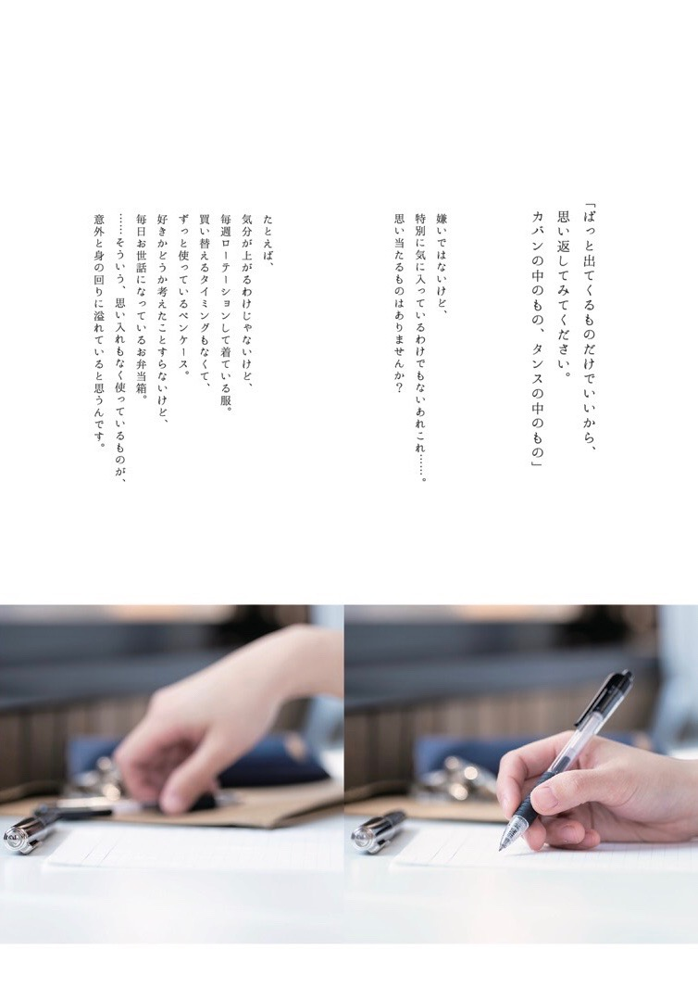
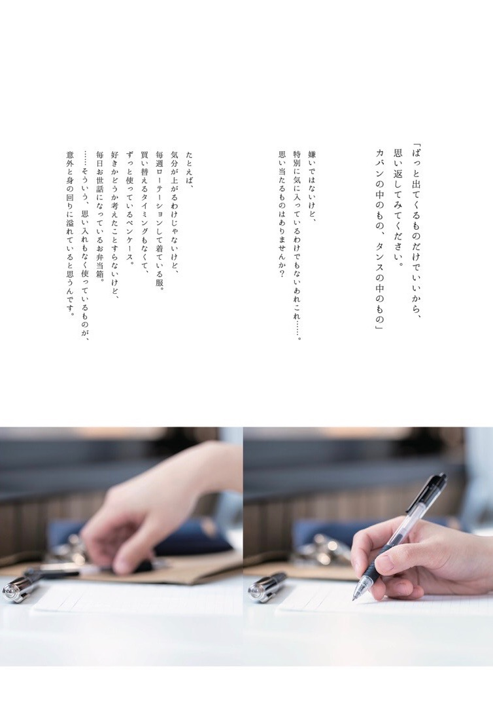

「名南生に驚きときっかけを」をコンセプトに名古屋大学・南山大学で配布しているフリーペーパーです！気軽に読めて、ちょっとタメになるコンテンツをお届けします
全て表示
コンテンツ紹介
こんにちは！
フリーペーパー『粋』企画部3年のさっちーです！
いつも読んでくださっている読者の皆様、本当にありがとうございます！！
そして、まだ読んだことがない皆様にも少しでも興味をもっていただけたら嬉しいなぁという思いのもと、
この場を借りて、4月に発行する春号をちょっとだけ紹介させていただきます(^^)
毎号特集テーマが変わる『粋』ですが、
今回のテーマは、
特集「持ちものに、もっとこだわる。」
です！！\(^^)/
タイトルを見たままなのですが、
今回は「もの」にフォーカスした企画となっています。
私達の身の回りはたくさんの「もの」で溢れていて、それを日常の中で無意識的に使っているわけですが、
みなさんは、ご自分の持ちものの中で、
「これはすごくお気に入り！！」
って胸を張って言えるもの、どのくらいお持ちでしょうか？？
……もし、頭の中でこれはちょっと違うかな〜というものが思い浮かんだならば、
自分の「持ちもの観」を見直してみるタイミングかもしれないですね。
今号では、さまざまな視点から、
「持ちものにこだわる」ことにアプローチしていきます。
いろいろな意見を取り入れながら、みなさんが心から「好き！」と思えるものに出会えるきっかけとなれば、製作陣一同冥利に尽きます。
大人気企画「ステキ女子。」は、今回はいつもとは一味違った写真の雰囲気で、モデルさんのかわいさを120%楽しめるようになっています✨
また「ステキ旅」では、今回は国内で楽しめる楽園・奄美大島へ行ってきました！たくさんの自然に癒される旅の様子をどうぞご覧ください！
発刊日は4月11日(木)で、手配りほか、名古屋大学、南山大学内にも設置してありますので、ぜひ一度お手にとってもらえたら嬉しいです(^^)
全て表示
 


こんな人に読んでほしい
- #自分の持ち物に対して関心を持ってこなかった人
- #もの選びの基準について考えたい人
- #自分のときめく感覚を知りたい人
運営団体
「名南生に驚きときっかけを」